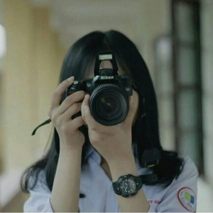
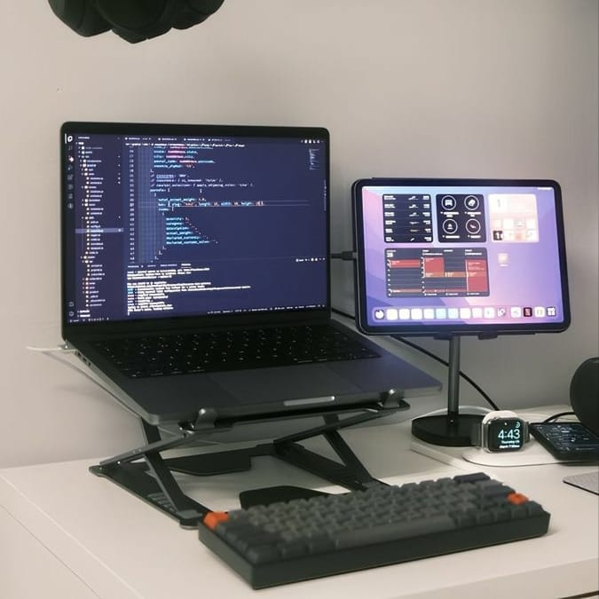

Selamat Datang Di Website Kami
Kami hadir sebagai wadah informasi, kolaborasi, dan inspirasi bagi anda. Di sini anda dapat mengenal lebih dekat visi kami. Kami percaya bahwa melalui kerja sama dan semangat kebersamaan, kita bisa menciptakan dampak positif yang lebih luas.
Jelajahi laman ini untuk mengetahui lebih banyak tentang kami.
Ingin melihat hasil dokumentasi kami?
Ikuti saluran WhatsApp kami sekarang!
 Gabung Saluran WhatsApp Multimedia_SMAN1T
Gabung Saluran WhatsApp Multimedia_SMAN1T

Divisi Broadcasting merupakan salah satu divisi seru dalam Ekstrakurikuler Multimedia yang berfokus pada dunia perfilman dan produksi video.
Di divisi ini, kita akan belajar dasar-dasar penggunaan kamera, mulai dari mengenal segitiga eksposur (aperture, shutter speed, dan ISO) hingga memahami berbagai angle pengambilan gambar untuk menciptakan hasil yang menarik dan sinematik.
Tak hanya itu, kita juga mempelajari dasar-dasar editing video, mengenal software editing, serta belajar tahapan-tahapan dalam proses pembuatan film, mulai dari perencanaan, pengambilan gambar, hingga pascaproduksi.
Yang tak kalah seru, kita juga belajar tentang akting, yaitu bagaimana cara memerankan tokoh dengan baik sesuai karakter dalam cerita. Semua kegiatan ini dilakukan dengan praktik langsung agar setiap anggota bisa merasakan pengalaman nyata di dunia broadcasting.
Buat kamu yang tertarik dengan dunia film, kamera, atau punya impian tampil di layar dan di balik layar, Divisi Broadcasting adalah tempat yang pas untuk mengembangkan bakatmu!

Divisi Programming merupakan salah satu bagian dari Ekstrakurikuler Multimedia. Di divisi ini, kita belajar dan berkembang bersama dalam dunia teknologi, khususnya yang berkaitan dengan komputer dan pemrograman.
Kegiatan kami berfokus pada pengenalan dasar-dasar komputer dan belajar coding menggunakan bahasa Python, yang merupakan salah satu bahasa pemrograman yang mudah dipahami dan banyak digunakan di dunia profesional. Selain itu, kami juga mempelajari dasar-dasar Web Development, mulai dari membuat tampilan halaman web hingga mengenal cara kerjanya di balik layar.
Seluruh kegiatan kami dilakukan di Lab Komputer sekolah, dengan suasana belajar yang santai namun tetap fokus dan menyenangkan. Bagi kalian yang ingin mengenal dunia teknologi lebih dalam atau bercita-cita menjadi seorang programmer, Divisi Programming adalah tempat yang tepat untuk memulai!
Yuk, bergabung dan tumbuh bersama kami di Divisi Programming!